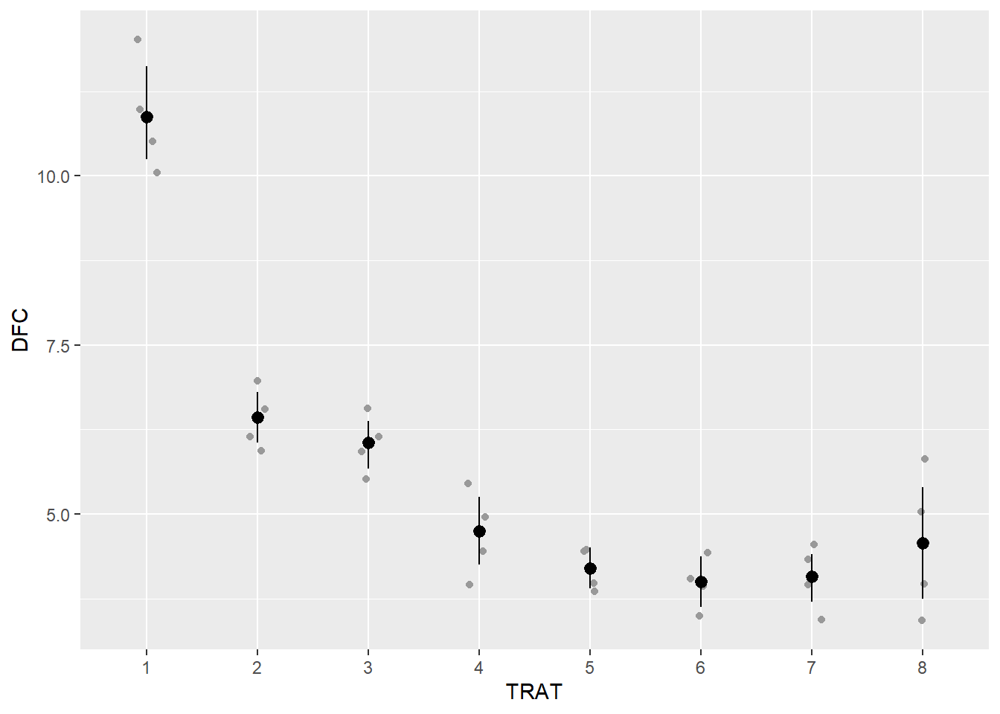
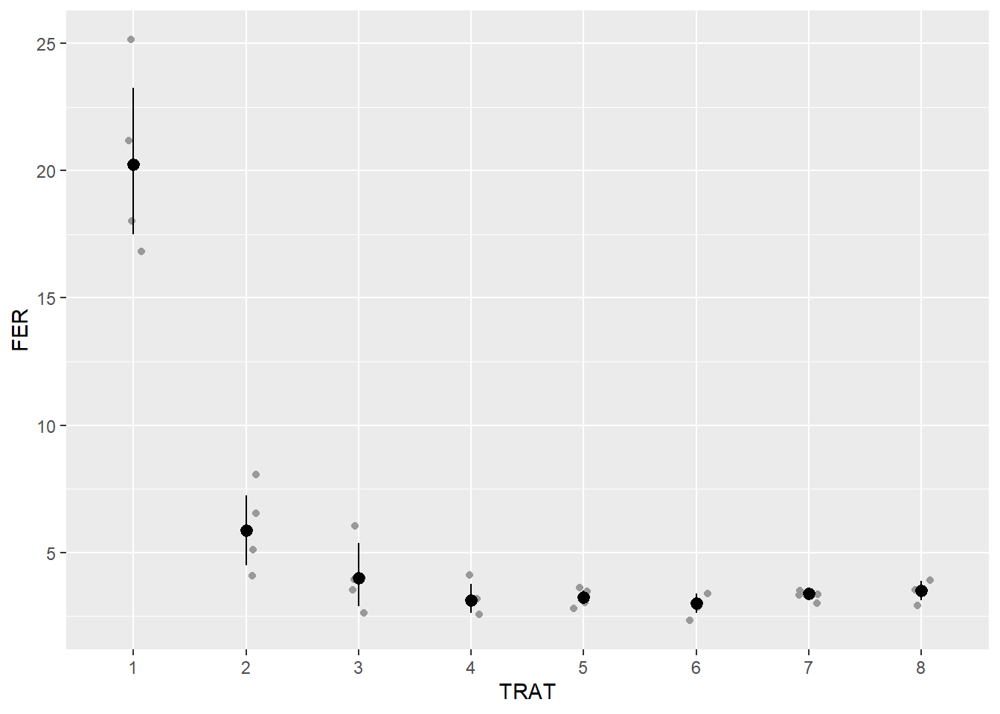
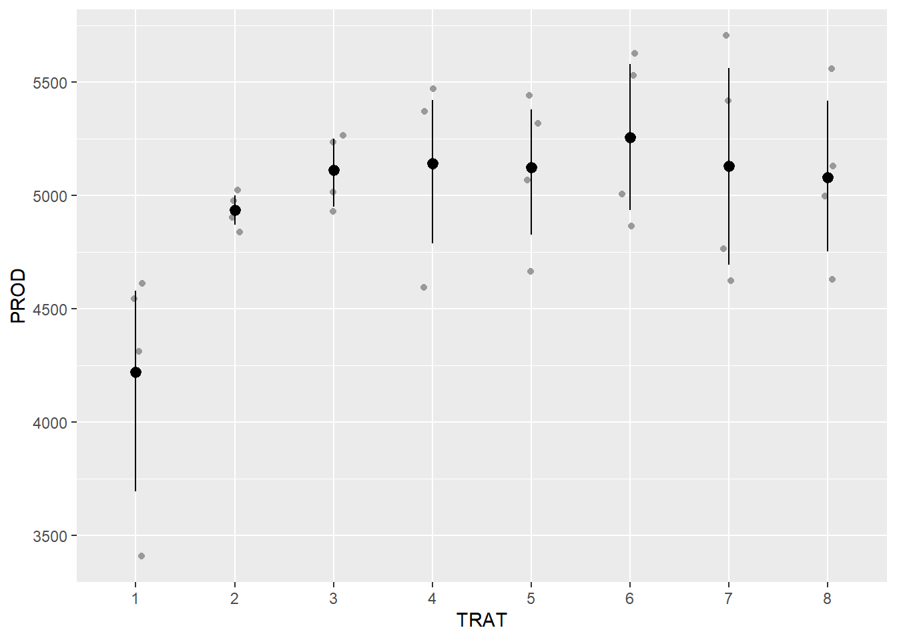
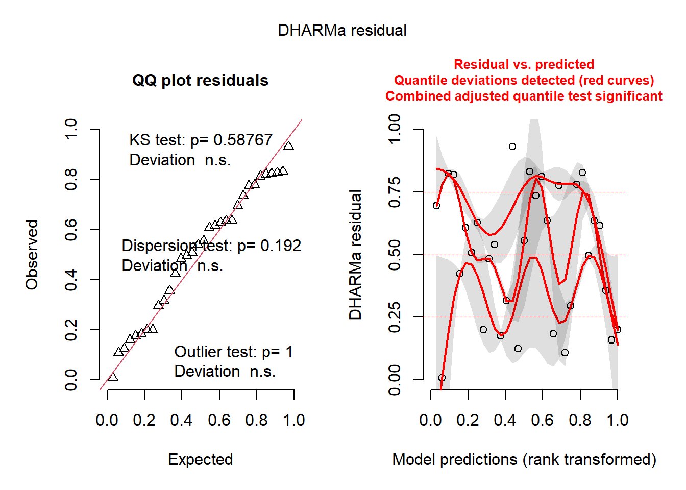

library(dplyr)
library(gsheet)
library(tidyverse)
library(performance)
library(emmeans)
library(multcomp)
library(DHARMa)ANOVA em bloco
Pacotes usados
Importar dados
soja <- gsheet2tbl("https://docs.google.com/spreadsheets/d/1bq2N19DcZdtax2fQW9OHSGMR0X2__Z9T/edit#gid=866852711")
#transformar o trat e bloco em um fator
soja <- soja |>
mutate(TRAT = as.factor(TRAT),
BLOCO = as.factor(BLOCO))Visualizar
dfc <- soja %>%
ggplot(aes(TRAT, DFC)) +
geom_jitter(width = 0.1, color = "gray60")+
stat_summary(fun.data = "mean_cl_boot", color = "black")
dfc
fer <- soja %>%
ggplot(aes(TRAT, FER )) +
geom_jitter(width = 0.1, color = "gray60")+
stat_summary(fun.data = "mean_cl_boot", color = "black")
fer
prod <- soja %>%
ggplot(aes(TRAT, PROD)) +
geom_jitter(width = 0.1, color = "gray60")+
stat_summary(fun.data = "mean_cl_boot", color = "black")
prod
comparações multiplas entre tratamentos
aov_dfc <- lm(DFC ~ TRAT + BLOCO, data = soja)
anova(aov_dfc)Analysis of Variance Table
Response: DFC
Df Sum Sq Mean Sq F value Pr(>F)
TRAT 7 149.299 21.3284 51.5490 8.218e-12 ***
BLOCO 3 0.461 0.1537 0.3716 0.7743
Residuals 21 8.689 0.4138
---
Signif. codes: 0 '***' 0.001 '**' 0.01 '*' 0.05 '.' 0.1 ' ' 1#o efeito do bloco não foi significativoChecar premissas
check_normality(aov_dfc)OK: residuals appear as normally distributed (p = 0.978).check_heteroscedasticity(aov_dfc)OK: Error variance appears to be homoscedastic (p = 0.532).Estimando médias
medias_dfc <- emmeans(aov_dfc, ~ TRAT)
medias_dfc TRAT emmean SE df lower.CL upper.CL
1 10.88 0.322 21 10.21 11.54
2 6.42 0.322 21 5.76 7.09
3 6.05 0.322 21 5.38 6.72
4 4.75 0.322 21 4.08 5.42
5 4.20 0.322 21 3.53 4.87
6 4.00 0.322 21 3.33 4.67
7 4.08 0.322 21 3.41 4.74
8 4.58 0.322 21 3.91 5.24
Results are averaged over the levels of: BLOCO
Confidence level used: 0.95 library(multcomp)
cld(medias_dfc) TRAT emmean SE df lower.CL upper.CL .group
6 4.00 0.322 21 3.33 4.67 1
7 4.08 0.322 21 3.41 4.74 1
5 4.20 0.322 21 3.53 4.87 1
8 4.58 0.322 21 3.91 5.24 12
4 4.75 0.322 21 4.08 5.42 12
3 6.05 0.322 21 5.38 6.72 23
2 6.42 0.322 21 5.76 7.09 3
1 10.88 0.322 21 10.21 11.54 4
Results are averaged over the levels of: BLOCO
Confidence level used: 0.95
P value adjustment: tukey method for comparing a family of 8 estimates
significance level used: alpha = 0.05
NOTE: If two or more means share the same grouping symbol,
then we cannot show them to be different.
But we also did not show them to be the same. ANOVA para variável resposta ferrugem
aov_fer <- lm(FER ~ TRAT + BLOCO, data = soja)
anova(aov_fer)Analysis of Variance Table
Response: FER
Df Sum Sq Mean Sq F value Pr(>F)
TRAT 7 978.87 139.838 55.1717 4.218e-12 ***
BLOCO 3 3.84 1.279 0.5045 0.6834
Residuals 21 53.23 2.535
---
Signif. codes: 0 '***' 0.001 '**' 0.01 '*' 0.05 '.' 0.1 ' ' 1chegar premissas
check_normality(aov_fer)Warning: Non-normality of residuals detected (p = 0.008).check_heteroscedasticity(aov_fer)Warning: Heteroscedasticity (non-constant error variance) detected (p < .001).# Não atendeu as premissasTransformação logaritmica
aov_fer <- lm(log(FER) ~ TRAT + BLOCO, data = soja)
anova(aov_fer)Analysis of Variance Table
Response: log(FER)
Df Sum Sq Mean Sq F value Pr(>F)
TRAT 7 11.5210 1.64585 42.9665 4.838e-11 ***
BLOCO 3 0.2064 0.06880 1.7961 0.1788
Residuals 21 0.8044 0.03831
---
Signif. codes: 0 '***' 0.001 '**' 0.01 '*' 0.05 '.' 0.1 ' ' 1check_normality(aov_fer)OK: residuals appear as normally distributed (p = 0.255).check_heteroscedasticity(aov_fer)Warning: Heteroscedasticity (non-constant error variance) detected (p = 0.035).medias_fer <- emmeans(aov_fer, ~ TRAT, type = "response")
medias_fer TRAT response SE df lower.CL upper.CL
1 20.02 1.959 21 16.33 24.54
2 5.68 0.556 21 4.63 6.96
3 3.81 0.373 21 3.11 4.67
4 3.08 0.301 21 2.51 3.78
5 3.24 0.317 21 2.64 3.97
6 2.98 0.292 21 2.43 3.65
7 3.37 0.330 21 2.75 4.13
8 3.48 0.341 21 2.84 4.27
Results are averaged over the levels of: BLOCO
Confidence level used: 0.95
Intervals are back-transformed from the log scale pwpm(medias_fer) 1 2 3 4 5 6 7 8
1 [20.02] <.0001 <.0001 <.0001 <.0001 <.0001 <.0001 <.0001
2 3.525 [ 5.68] 0.1252 0.0048 0.0110 0.0028 0.0204 0.0343
3 5.259 1.492 [ 3.81] 0.7832 0.9335 0.6440 0.9843 0.9976
4 6.500 1.844 1.236 [ 3.08] 0.9999 1.0000 0.9976 0.9842
5 6.178 1.753 1.175 0.951 [ 3.24] 0.9984 1.0000 0.9994
6 6.721 1.906 1.278 1.034 1.088 [ 2.98] 0.9842 0.9431
7 5.945 1.686 1.130 0.915 0.962 0.885 [ 3.37] 1.0000
8 5.750 1.631 1.093 0.885 0.931 0.856 0.967 [ 3.48]
Row and column labels: TRAT
Upper triangle: P values null = 1 adjust = "tukey"
Diagonal: [Estimates] (response) type = "response"
Lower triangle: Comparisons (ratio) earlier vs. laterlibrary(multcomp)
cld(medias_fer, Letters = LETTERS) TRAT response SE df lower.CL upper.CL .group
6 2.98 0.292 21 2.43 3.65 A
4 3.08 0.301 21 2.51 3.78 A
5 3.24 0.317 21 2.64 3.97 A
7 3.37 0.330 21 2.75 4.13 A
8 3.48 0.341 21 2.84 4.27 A
3 3.81 0.373 21 3.11 4.67 AB
2 5.68 0.556 21 4.63 6.96 B
1 20.02 1.959 21 16.33 24.54 C
Results are averaged over the levels of: BLOCO
Confidence level used: 0.95
Intervals are back-transformed from the log scale
P value adjustment: tukey method for comparing a family of 8 estimates
Tests are performed on the log scale
significance level used: alpha = 0.05
NOTE: If two or more means share the same grouping symbol,
then we cannot show them to be different.
But we also did not show them to be the same. pwpm (medias_fer) 1 2 3 4 5 6 7 8
1 [20.02] <.0001 <.0001 <.0001 <.0001 <.0001 <.0001 <.0001
2 3.525 [ 5.68] 0.1252 0.0048 0.0110 0.0028 0.0204 0.0343
3 5.259 1.492 [ 3.81] 0.7832 0.9335 0.6440 0.9843 0.9976
4 6.500 1.844 1.236 [ 3.08] 0.9999 1.0000 0.9976 0.9842
5 6.178 1.753 1.175 0.951 [ 3.24] 0.9984 1.0000 0.9994
6 6.721 1.906 1.278 1.034 1.088 [ 2.98] 0.9842 0.9431
7 5.945 1.686 1.130 0.915 0.962 0.885 [ 3.37] 1.0000
8 5.750 1.631 1.093 0.885 0.931 0.856 0.967 [ 3.48]
Row and column labels: TRAT
Upper triangle: P values null = 1 adjust = "tukey"
Diagonal: [Estimates] (response) type = "response"
Lower triangle: Comparisons (ratio) earlier vs. later# a transformação logaritmica não foi adequada para atender as premissasTransformação box-cox
b <- boxcox(lm(soja$FER ~1))
lambda<- b$x[which.max(b$y)]
lambda[1] -1.555556soja$FER2 <- (soja$FER ^ lambda - 1) / lambdaANOVA para variável resposta produtividade
#construindo função para anova
aov_prod <- lm(log(PROD) ~ TRAT + BLOCO, data = soja)
anova(aov_prod)Analysis of Variance Table
Response: log(PROD)
Df Sum Sq Mean Sq F value Pr(>F)
TRAT 7 0.143280 0.0204686 2.8143 0.03113 *
BLOCO 3 0.005813 0.0019378 0.2664 0.84881
Residuals 21 0.152733 0.0072730
---
Signif. codes: 0 '***' 0.001 '**' 0.01 '*' 0.05 '.' 0.1 ' ' 1# Verificar os pressupostos
check_normality(aov_prod)OK: residuals appear as normally distributed (p = 0.325).check_heteroscedasticity(aov_prod)Warning: Heteroscedasticity (non-constant error variance) detected (p = 0.013).library(DHARMa)
plot(simulateResiduals(aov_prod))
# Comparação de médias
medias_prod <- emmeans(aov_prod, ~ TRAT, type = "response")
medias_prod TRAT response SE df lower.CL upper.CL
1 4189 179 21 3834 4578
2 4935 210 21 4516 5392
3 5108 218 21 4675 5582
4 5129 219 21 4693 5604
5 5113 218 21 4679 5587
6 5246 224 21 4801 5732
7 5108 218 21 4675 5582
8 5067 216 21 4637 5537
Results are averaged over the levels of: BLOCO
Confidence level used: 0.95
Intervals are back-transformed from the log scale pwpm(medias_prod) 1 2 3 4 5 6 7 8
1 [4189] 0.1725 0.0574 0.0500 0.0554 0.0225 0.0574 0.0750
2 0.849 [4935] 0.9989 0.9977 0.9987 0.9668 0.9989 0.9998
3 0.820 0.966 [5108] 1.0000 1.0000 0.9998 1.0000 1.0000
4 0.817 0.962 0.996 [5129] 1.0000 0.9999 1.0000 1.0000
5 0.819 0.965 0.999 1.003 [5113] 0.9998 1.0000 1.0000
6 0.799 0.941 0.974 0.978 0.975 [5246] 0.9998 0.9989
7 0.820 0.966 1.000 1.004 1.001 1.027 [5108] 1.0000
8 0.827 0.974 1.008 1.012 1.009 1.035 1.008 [5067]
Row and column labels: TRAT
Upper triangle: P values null = 1 adjust = "tukey"
Diagonal: [Estimates] (response) type = "response"
Lower triangle: Comparisons (ratio) earlier vs. latermedias_prod_group <- cld(medias_prod, letters = LETTERS)
cld(medias_prod, Letters = LETTERS) TRAT response SE df lower.CL upper.CL .group
1 4189 179 21 3834 4578 A
2 4935 210 21 4516 5392 AB
8 5067 216 21 4637 5537 AB
3 5108 218 21 4675 5582 AB
7 5108 218 21 4675 5582 AB
5 5113 218 21 4679 5587 AB
4 5129 219 21 4693 5604 B
6 5246 224 21 4801 5732 B
Results are averaged over the levels of: BLOCO
Confidence level used: 0.95
Intervals are back-transformed from the log scale
P value adjustment: tukey method for comparing a family of 8 estimates
Tests are performed on the log scale
significance level used: alpha = 0.05
NOTE: If two or more means share the same grouping symbol,
then we cannot show them to be different.
But we also did not show them to be the same.